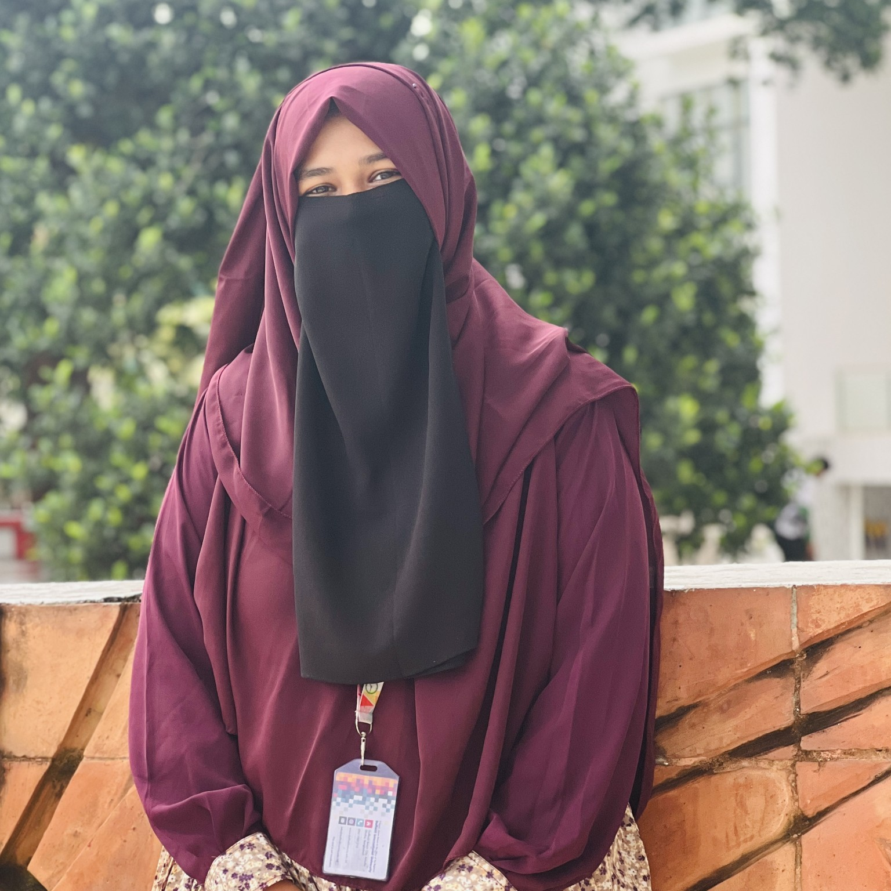

OPEN TO LEARNING & OPPORTUNITIES
HELLO, I'M
Sharmin Akter
Computer Science & Engineering Student
I’m a Computer Science and Engineering student at Daffodil International University. I enjoy learning how technology works and applying my knowledge through academic projects, web development, and problem-solving.
